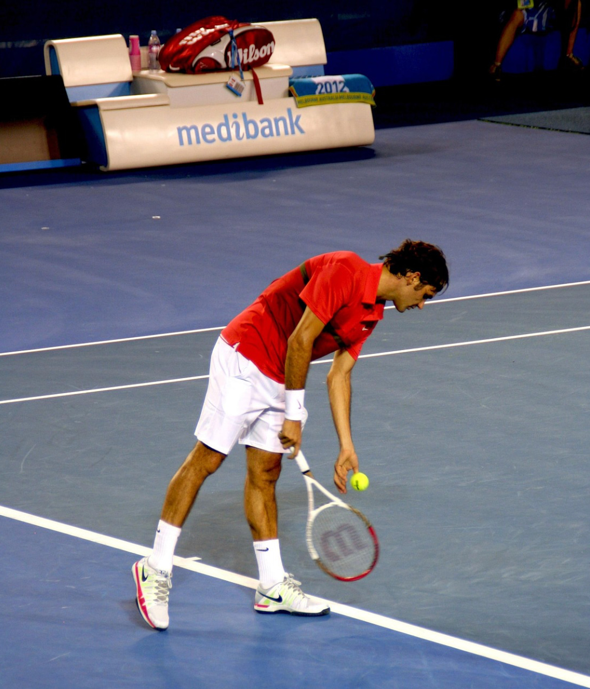
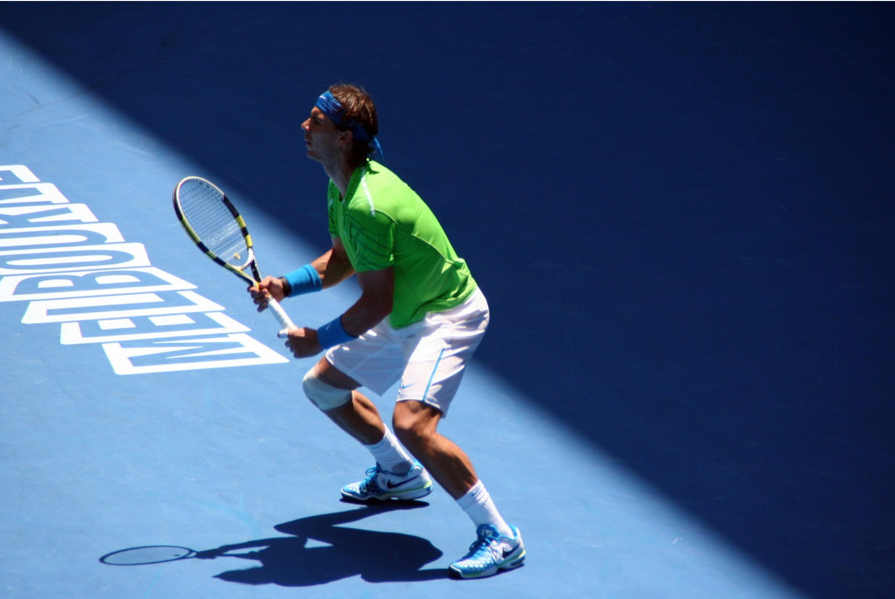
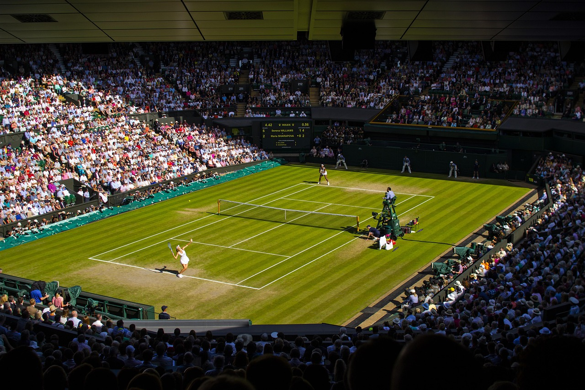

Who are the Big Three?
The "Big Three"—Roger Federer, Rafael Nadal, and Novak Djokovic—collectively redefined tennis through an unprecedented two-decade era of dominance, winning 66 out of 87 Grand Slam titles between 2003 and 2024. Their prowess is best understood through their contrasting styles: Federer was the "Maestro," defined by an effortless, attacking grace and a record eight Wimbledon titles; Nadal was the "King of Clay," a physical warrior whose relentless topspin earned him a historic 14 French Open crowns; and Djokovic, arguably the greatest statistically, became the "Ultimate Defender" with a record 24 Grand Slam titles and the most weeks at world No. 1. As of 2026, the era is nearing its conclusion: Federer and Nadal have retired, while Djokovic remains the final active member of the group, still competing at the highest level.
Roger Federer

Federer was the first to reach the 20-Slam milestone and is often credited with bringing a renewed elegance and global popularity to the game.
- Grand Slam Titles: 20
- Specialty: Grass (Record 8 Wimbledon titles).
- Style: Known for an "effortless" style, a legendary one-handed backhand, and exceptional sportsmanship.
- Status: Retired in September 2022. In 2026, he remains a global ambassador for the sport and was recently nominated for the International Tennis Hall of Fame.
Rafael Nadal

- Location: Stade Roland Garros, Paris, France
- Surface: Red Clay
- Time: May – June
- Vibe: The most physically demanding of the four. Clay slows down the ball and creates a high bounce, leading to long, grueling baseline rallies. It requires extreme patience and stamina.
- 2026 Dates: Scheduled for May 24 – June 7.
Wimbledon

- Location: All England Club, London, UK
- Surface: Grass
- Time: June – July
- Vibe: The oldest and most traditional tournament. It has a strict all-white dress code for players and is famous for its grass courts, which favor fast serves and net play. It is the only Major still played on grass.
- 2026 Dates: Scheduled for June 29 – July 12.